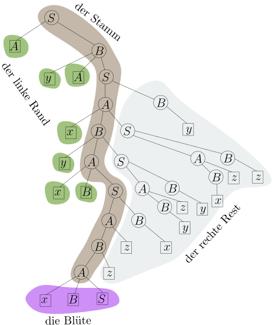
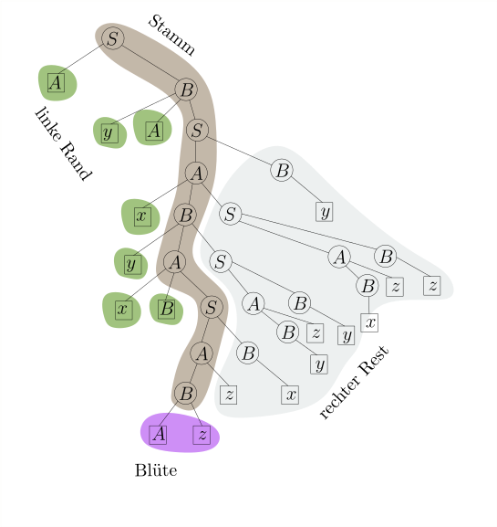
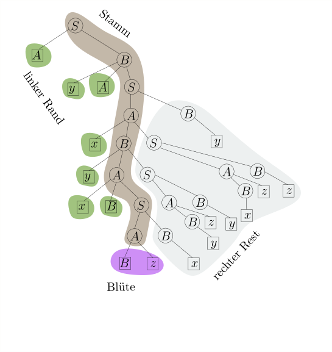
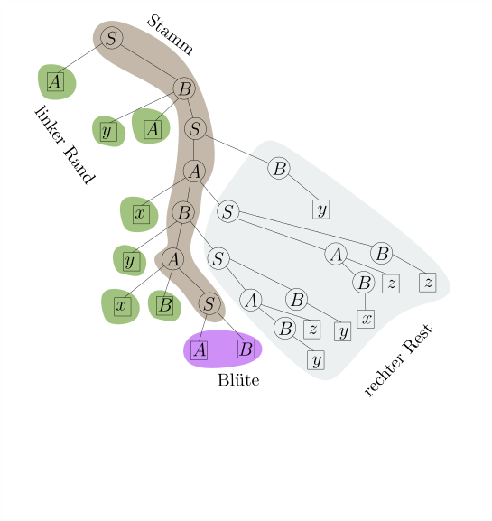
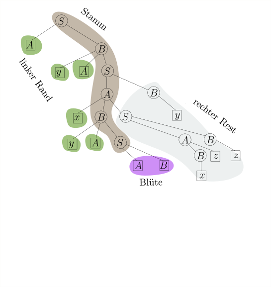

<div id="rightSideWrapper">

        <div class="content">
            <div class='chapter'>
                <div class='subChapter'>
                    <h1 class='hidden-title'>
                        <span class='subChapterTitle'>5.8 Linker Rand, Blüten und die DK-Grammatik</span>
                    </h1>

                    <p>
                        In diesem Teilkapitel werden wir sehen,
                        wie wir für eine gültige Wortform $\gamma$
                        den korrekten Linksreduktionsschritt
                    </p>
                    \begin{align*}
                    \gamma = \alpha \beta w \rstep{} \alpha X w
                    \end{align*}
                    <p>
                        finden. Als erstes müssen wir uns überlegen,
                        wie die Front $\front(\gamma) = \alpha \beta$
                        überhaupt aussehen kann. Wenn wir
                        uns den Ableitungsbaum von $\gamma$ ansehen,
                        wird das einigermaßen offensichtlich sein.
                    </p>
                    <p>
                        Zur Erinnerung:


                        Zu jeder Ableitung \(S \Step{}^* w \in \Sigma^*\) können wir
                        eindeutig einen <em>Ableitungsbaum</em> zeichnen. Wenn die Grammatik
                        eindeutig ist, so hängt auch der Baum nur vom Wort \(w \in L(G)\) ab und
                        nicht von der Ableitung \(S \Step{}^* w\).
                        Allerdings können wir für Zwischenformen
                        \(S \Step{}^* \gamma \Step{}^* w\) auch einen Ableitungsbaum zeichnen,
                        und der unterscheidet sich stark, abhängig davon, ob \(S \Step{}^* \gamma\) eine
                        Rechtsableitung, Linksableitung oder sonst was ist.
                        Ich zeige Ihnen jetzt ein Beispiel für eine Grammatik und
                        eine Handvoll Ableitungen samt Ableitungsbaum.
                    </p>
                    \begin{align*}
                    G & : \\
                    S & \rightarrow AB \\
                    A & \rightarrow xBS \ | \ Bz \\
                    B & \rightarrow yAS \ | \ Az \ | \ x \ | \ y \ | \ z
                    \end{align*}
                    <p>
                        Es ist zu diesem Zeitpunkt irrelevant, ob \(G\) eindeutig
                        oder sogar \(LR(0)\) ist. Ich interessiere mich
                        gerade nur für Ableitungsbäume von Wortformen.
                    </p>
                    <figure class='centered-figure well container'>
                        <a class='left carousel-control-prev-icon' href='#right-left-messy' data-slide='prev'>
                            <div class='carousel-nav-icon'>
                                
                            </div>
                        </a>
                        <a class='right carousel-control-next-icon' href='#right-left-messy' data-slide='next'>
                            <div class='carousel-nav-icon'>
                                
                            </div>
                        </a>
                        <div id='right-left-messy' class='carousel' data-interval='false' style='display:inline-block'>
                            <ol class='carousel-indicators'>
                                <li data-target='#right-left-messy' data-slide-to='1' class='active'></li>
                                <li data-target='#right-left-messy' data-slide-to='2'></li>
                                <li data-target='#right-left-messy' data-slide-to='3'></li>
                            </ol>
                            <div class='carousel-inner' style='display:inline-block'>
                                <div class='item active'></div>
                                <div class='item'></div>
                                <div class='item'></div>
                            </div class='carousel-inner'>
                        </div class='carousel'>
                    </figure>
                    <p>
                        Fällt Ihnen etwas auf? Schauen Sie sich bitte noch ein weiteres
                        Beispiel an für den Ableitungsbaum einer in einer
                        gültigen Wortform, also von einer, die in einer
                        Rechtsableitung vorkommen kann:
                    </p>
                    <figure>
                        
                    </figure>
                    <div class="well container subtheorem">
                        <strong>Warten Sie!</strong>
                        Scrollen Sie erst weiter, wenn Sie den Baum oben lang genug angeschaut haben!
                        Versuchen Sie selbst, die spezielle Form dieses Baumes möglichst
                        formal zu beschreiben!
                    </div>
                    <div style="height:40em">
                    </div>
                    <div class="well container subtheorem">
                        <strong>Auflösung.</strong> Hier sehen Sie noch einmal
                        den gleichen Baum, nun aber gewisse Teile verschieden umrandet / eingefärbt.
                    </div>
                    <figure>
                        
                    </figure>
                    <p>Sie sehen: links vom Stamm gibt es nur Blätter.
                        Rechts vom Stamm ist jedes Blatt ein Terminalsymbol.
                        Wir erkennen auch, was der letzte Ableitungsschritt war, der zu diesem
                        Baum geführt hat: die Blüte ist hinzugekommen, in diesem Fall
                        also \(A \rightarrow x B S\).
                        Wir definieren nun eingeführten Begriffe formal:</p>
                    <div class='well container theorem'>
                        <span class='numbered-title'>Definition / Beobachtung</span>
                        <strong>(Stamm, linker Rand, Blüte, Front, rechter Rest)</strong>
                        Sei \(S \Step{}^* \gamma\) eine Rechtsableitung, \(\gamma\) also
                        eine gültige Wortform, und
                        \(\mathcal{T}\) der Ableitungsbaum von \(\gamma\).
                        Der <em>Stamm</em> ist der Pfad von der Wurzel zu jenem inneren Knoten \(u\),
                        der von allen inneren Knoten, deren Kinder allesamt Blätter sind,
                        am weistesten links steht.
                        Die Kinder von \(u\), per Definition alles Blätter, sind die <em>Blüte</em>.
                        Die Menge der Knoten, die einen Stammknoten als rechtes Geschwister haben,
                        heißt der <em>linke Rand</em>. Jeder Knoten \(v\) im linken Rand
                        muss ein Blatt sein, ansonsten stünde er ja weiter links als \(u\);
                        die Menge der rechten Geschwisterkinder von Stammknoten sowie deren Nachkommen
                        heißt der <em>rechte Rand</em>.
                        Im rechten Rest ist jedes Blatt ein
                        Terminalsymbol, ansonsten wäre es keine Rechtsableitung.

                        <p>
                            Die Beschriftung der Knoten im linken Rand ergibt eine Wortform \(\alpha\);
                            die Blüte ergibt \(\beta\).
                            Die Blätter im rechten Rand
                            sind ausschließlich mit Terminalen beschriftet und ergeben ein
                            Wort \(w \in \Sigma^*\). Der ganze Baum stellt also eine Rechtsableitung
                        </p>
                        \begin{align*}
                        S \Step{R}^* \alpha \beta w
                        \end{align*}
                        dar. Die Wortform $\alpha\beta$, also linker Rand plus Blüte, nennen wir
                        die <em>Front</em> von $\mathcal{T}$ und schreiben sie als $\front(\mathcal{T})$.
                        Wir sagen auch, dass \(\beta\) <em>eine Blüte von \(\gamma\)</em> und
                        $\alpha\beta$ die <em>Front</em> von $\gamma$ ist,
                        ohne über den Ableitungsbaum \(\mathcal{T}\) selbst zu reden.
                        Hierbei ist zu beachten, dass in einer mehrdeutigen Grammatik
                        eine gültige Wortform mehrere Ableitungsbäume und somit
                        mehrere Blüten haben kann, die Unterteilung \(\gamma = \alpha\beta w\)
                        also nicht eindeutig ist. Für eindeutige Grammatiken ist
                        die Unterteilung aber eindeutig.


                        <p>
                            Sei weiterhin \(A\) die Beschriftung des Elternknoten der Blüte
                            (notwenigerweise ein Nichtterminal; Terminale haben keine Kinder).
                            Dann ist \(A \rightarrow \beta\) eine Produktion in der Grammatik und
                            \(\alpha A w\) eine gültige Wortform; wir erhalten den Ableitungsbaum
                            von \(\alpha A w\), indem wir die Blüte von \(\mathcal{T}\) entfernen.
                            Wir schließen, dass
                            \begin{align*}
                            \alpha \beta w \rstep{} \alpha A w
                            \end{align*}
                            ein korrekter Linksreduktionsschritt ist.
                        </p>
                    </div class='well container theorem'>
                    <p>Wir können also, ausgehend von der Wortform \(\gamma\),
                        eine Linksreduktion \(\gamma \rstep{}^* S\) finden,
                        indem wir den Ableitungsbaum von \(\gamma\) zeichnen und
                        immer wieder die Blüte abschneiden:
                    </p>
                    <figure class='centered-figure well container'>
                        <a class='left carousel-control-prev-icon' href='#remove-flowers' data-slide='prev'>
                            <div class='carousel-nav-icon'>
                                
                            </div>
                        </a>
                        <a class='right carousel-control-next-icon' href='#remove-flowers' data-slide='next'>
                            <div class='carousel-nav-icon'>
                                
                            </div>
                        </a>
                        <div id='remove-flowers' class='carousel' data-interval='false' style='display:inline-block'>
                            <ol class='carousel-indicators'>
                                <li data-target='#remove-flowers' data-slide-to='1' class='active'></li>
                                <li data-target='#remove-flowers' data-slide-to='2'></li>
                                <li data-target='#remove-flowers' data-slide-to='3'></li>
                                <li data-target='#remove-flowers' data-slide-to='4'></li>
                                <li data-target='#remove-flowers' data-slide-to='5'></li>
                                <li data-target='#remove-flowers' data-slide-to='6'></li>
                                <li data-target='#remove-flowers' data-slide-to='7'></li>
                                <li data-target='#remove-flowers' data-slide-to='8'></li>
                                <li data-target='#remove-flowers' data-slide-to='9'></li>
                                <li data-target='#remove-flowers' data-slide-to='10'></li>
                            </ol>
                            <div class='carousel-inner' style='display:inline-block'>
                                <div class='item active'></div>
                                <div class='item'></div>
                                <div class='item'></div>
                                <div class='item'></div>
                                <div class='item'></div>
                                <div class='item'></div>
                                <div class='item'></div>
                                <div class='item'></div>
                                <div class='item'></div>
                                <div class='item'></div>
                            </div class='carousel-inner'>
                        </div class='carousel'>
                    </figure>

                    <p>Um für eine Wortform \(\gamma\) den korrekten Reduktionsschritt zu finden,
                        reicht es also aus, linken Rand und Blüte zu bestimmen, also
                        \(\alpha\) und \(\beta\), so dass \(\gamma = \alpha\beta w\)
                        und \(\alpha \beta w \rstep{} \alpha A w\) korrekt ist (\(A\) steht hier
                        für das Nichtterminal, mit dem der Elternknoten der Blüte beschriftet ist).
                        Linken Rand und Blüte zu finden scheint keine leichte Aufgabe zu sein:
                        schließlich müssen wir dafür doch den Ableitungsbaum von \(\gamma\) bilden,
                        was selbst wieder eine Parsing-Aufgabe ist???
                    </p>
                    <p>
                        An dieser Stelle zeigt sich die Genialität des DK-Ansatzes:
                        der Ableitungsbaum von \(\gamma\) kann beliebig verschachtelt sein,
                        aber Stamm, linker Rand und Blüte haben zusammen eine einfache,
                        beinahe linear anmutende Struktur. Schematisch:
                    </p>
                    <figure>
                        
                    </figure>
                    <p>
                        Die Aussage "Stamm, linker Rand und Blüte haben eine einfache Struktur"
                        können wir formalisieren.
                    </p>
                    <div class='well container theorem'>
                        <span class='numbered-title'>Definition</span>
                        Für eine kontextfreie Grammatik \(G\) definieren wir
                        die Sprache \(\Front(G) \subseteq (\Sigma \cup N)^*\):
                        \begin{align*}
                        \Front(G) := \{\front(\mathcal{T}) \ | \ \mathcal{T}
                        \textnormal{ ist der Ableitungsbaum einer Rechtsableitung }
                        S \Step{R}^* \gamma \}
                        \end{align*}
                        alternativ
                        \begin{align*}
                        \Front(G) := \{\alpha \beta \ | \ S \Steps{R} \alpha X w
                        \Step{R} \alpha \beta w \}
                        \end{align*}
                        also die Menge aller Wortformen, die Front einer gültigen Wortform
                        sind.
                    </div>
                    <div class='well container theorem'>
                        <p><span class='numbered-title'>Lemma</span>
                            Die Sprache $\Front(G)$ ist regulär.
                            Insbesondere gibt es eine erweitert reguläre Grammatik \(\hat{G}\) für
                            $\Front(G)$, so dass die Blüte genau die im letzen Ableitungsschritt
                            erzeugten Terminalsymbole sind.
                        </p>
                    </div class='well container theorem'>

                    <p>
                        Hier ist etwas Mentalgymnastik vonnöten: aus Sicht der Sprache
                        $\Front(G)$ sind \(\Sigma \cup N\) <em>Terminalsymbole</em>. Sie können
                        ja schließlich in den Wörtern der Sprache auftauchen.
                        Die Grammatik \(\hat{G}\) hat also die Terminalsymbole
                        \(\Sigma \cup N\). Darüberhinaus hat sie
                        die Nichtterminale \(\hat{N} := \{ \hat{X} \ | \ X \in N\}\),
                        also für jedes Nichtterminal \(X\) von \(G\) ein
                        Meta-Nichtterminal \(\hat{X}\). Das \(X \in N\) entspricht
                        dem \(\boxed{X}\) in den obigen Bäumen, wo also \(N\) als Blatt vorkommt;
                        das \(\hat{X} \in \hat{N}\) entspricht dem
                        ,
                        also wo \(W\) als innerer Knoten vorkommt. Bevor ich
                        \(\hat{G}\) formal definiere, zeige ich den obigen Ableitungsbaum
                        (ohne rechten Rand, weil der ja bei $\front(G)$ eh fehlt)
                        und annotiere jeden Knoten auf dem Stamm mit der entsprechenden
                        \(\hat{G}\)-Produktion.
                    </p>
                    <figure>
                        
                    </figure>

                    <div class='well container theorem'>
                        <span class='numbered-title'>Definition</span>
                        Sei \(G = (\Sigma, N, S, P)\) eine kontextfreie Grammatik. Die
                        Front-Grammatik oder DK-Grammatik von \(G\) ist
                        die <em>erweitert reguläre</em> Grammatik \(\hat{G} = (\Sigma \cup N, \hat{N}, \hat{S},
                        \hat{P})\)
                        mit \(\hat{N} := \{\hat{X} \ | \ X \in N\}\), wobei
                        \(\hat{P}\) für jede \(G\)-Produktion
                        \begin{align*}
                        A \rightarrow w_0 A_1 w_1 A_2 w_2 \dots w_{k-1} A_k w_k
                        \end{align*}
                        mit \(w_i \in \Sigma^*\) die Produktionen
                        \begin{align*}
                        \hat{A} & \rightarrow w_0 \hat{A}_1 \\
                        \hat{A} & \rightarrow w_0 A_1 w_1 \hat{A}_2 \\
                        & \vdots \\
                        \hat{A} & \rightarrow w_0 A_1 w_1 A_2 w_2 \dots A_{k-1} w_{k-1} \hat{A}_k \\
                        \hat{A} & \rightarrow w_0 A_1 w_1 A_2 w_2 \dots w_{k-1} A_k w_k
                        \end{align*}
                        besitzt.
                    </div class='well container theorem'>

                    <div class='well container theorem'>
                        <span class='numbered-title'>Beobachtung</span>
                        \(\hat{G}\) erzeugt die Sprache
                        \(\Front(G)\).
                    </div class='well container theorem'>


                    <div class='well container theorem'>
                        <span class='numbered-title'>Beispiel</span>
                        Für unsere Grammatik \(G\) oben ergeben sich folgende Produktionen
                        \(\hat{P}\) in \(\hat{G}\):
                        \begin{align*}
                        \begin{array}{l|l}
                        \textnormal{Produktion in $G$}
                        &
                        \textnormal{Produktion in $\hat{G}$} \\
                        & {\dk{S}} \rightarrow \dk{A}\\
                        S \rightarrow AB & {\dk{S}} \rightarrow \dkt{A} \dk{B}\\
                        & {\dk{S}} \rightarrow \dkt{AB} \\ \hline
                        %
                        & {\dk{A}} \rightarrow \dkt{x} \dk{B}\\
                        A \rightarrow xBS & {\dk{A}} \rightarrow \dkt{x B} \dk{S}\\
                        & {\dk{A}} \rightarrow \dkt{x B S}\\ \hline
                        %
                        A \rightarrow Bz & {\dk{A}} \rightarrow \dk{B}\\
                        & {\dk{A}} \rightarrow \dkt{Bz} \\ \hline
                        %
                        & \dk{B} \rightarrow \dkt{y} \dk{A}\\
                        B \rightarrow y A S & \dk{B} \rightarrow \dkt{y A} \dk{S} \\
                        & \dk{B} \rightarrow \dkt{y A S} \\ \hline
                        %
                        & \dk{B} \rightarrow \dk{A} \\
                        B \rightarrow Az & \dk{B} \rightarrow \dkt{Az} \\ \hline
                        %
                        B \rightarrow x & \dk{B} \rightarrow \dkt{x} \\
                        B \rightarrow y & \dk{B} \rightarrow \dkt{y} \\
                        B \rightarrow z & \dk{B} \rightarrow \dkt{z} \\
                        \end{array}
                        \end{align*}
                    </div class='well container theorem'>
                    <p>
                        Nochmals: Produktionen wie
                        \(\dk{B} \rightarrow \dkt{y A} \dk{S}\) sind erweitert regulär
                        weil $\dkt{y}$ und $\dkt{A}$ aus Sicht von \(\hat{G}\) beides
                        Terminalsymbole sind. Wir können nun unseren \(LR(0)\)-Parser beschreiben:
                    </p>
                    <div class='well container theorem' id="algorithm-LR-parser">
                        <span class='numbered-title'>Algorithmus</span>
                        <strong>- Der \(LR(0)\)-Parser.</strong>
                        Starte mit einem leerem Stack. Sei
                        \(\gamma\) der Inhalt des Stacks zu einem Zeitpunkt.
                        <ol>
                            <li>Wenn \(\gamma \in \Front(G)\), dann
                                betrachte die letzte angewandte \(\hat{G}\)-Produktion
                                \(\hat{X} \rightarrow \beta\) und schreibe
                                \(\gamma = \alpha\beta\). Wende die \(G\)-Produktion
                                \(X \rightarrow \beta\) rückwärts an, reduziere also
                                \begin{align*}
                                \alpha \beta \rstep{} \alpha X
                                \end{align*}
                                Konkret: lösche \(\beta\) vom Stack und ersetze es durch \(A\).
                            </li>
                            <li>
                                Falls \(\gamma \not \in \Front(G)\),
                                lies das nächste Eingabezeichen und lege es auf den Stack.
                            </li>
                        </ol>
                        Der Parser endet, wenn weder Schritt 1 noch Schritt 2 möglich sind;
                        wenn zu diesem Zeitpunkt nur noch \(S\) auf dem Stack liegt,
                        akzeptiert er, andernfalls lehnt er das Eingabewort ab.
                    </div class='well container theorem'>

                    <!--
                    <p><strong>Schlauere Implementierung.</strong> Um
                        \(\gamma \in \textnormal{SLRB}(G)\) zu testen (und die letzte
                        Produktion in der Ableitung \(\hat{G} \Step{}^* \gamma\) zu bestimmen)
                        können wir zu \(\hat{G}\) einen deterministischen endlichen Automaten \(\hat{M}\),
                        auch DK-Automat genannt, konstruieren.
                        Bei einer naiven Implementierung müsste \(\hat{M}\) in jedem
                        Parser-Schritt den ganzen Stack \(\gamma\) verarbeiten und das Ergebnis
                        bestimmen. Schneller geht es natürlich, wenn der Parser
                        in jedem Schritt
                        dem Automaten das Eingabezeichen "füttert". Allerdings müssen wir aufpassen:
                        wenn der Parser den Reduktionsschritt
                        \begin{align*}
                        \alpha \beta \rstep{} \alpha A
                        \end{align*}
                        anwendet und somit \(\beta\) vom Stack löscht, müssen wir den DK-Automaten
                        "zurückspulen". Wir legen dafür in jedem Schritt (bei Stackinhalt \(\gamma\))
                        auch den Zustand \(\hat{M}(\gamma)\) auf den Stack, wobei
                        \(\hat{M}(\gamma)\) den Zustand von \(\hat{M}\) bezeichnet, in dem \(\hat{M}\)
                        nach dem
                        Lesen von \(\gamma\) landet.
                        Wenn wir \(\beta\) vom Stack gelöscht haben, liegt also oben auf dem Stack
                        nicht nur das rechteste Zeichen von \(\alpha\), sondern auch
                        der Zustand \(\hat{M}(\alpha)\). Wir legen nun \(A\) auf den Stack
                        und berechnen in <em>einem</em> DK-Schritt
                        seinen Folgezustand \(\hat{M}(\alpha A)\). So brauchen
                        wir in jedem Parser-Schritt nur <em>einen</em> DK-Schritt zu machen.
                    </p>
                    -->

                    <div class='well container theorem'>
                        <span class='numbered-title'>Theorem</span>
                        Wenn der \(LR(0)\)-Parser akzeptiert, dann hat er eine Linksreduktion
                        \(w \rstep{}^* S\) und somit eine Rechtsableitung konstruiert; es gilt
                        also \(w \in L(G)\).

                        <p>
                            Wenn umgekehrt \(w \in L(G)\) gilt und
                            \(G\) die \(LR(0)\)-Bedingung erfüllt,
                            dann findet der
                            Parser die Rechtsableitung \(S \Step{}^* w\),
                        </p>
                    </div class='well container theorem'>
                    <div class='well container'>
                        <p><strong>Beweis.</strong>
                            Der erste Teil der Bedeutung ist einfach zu sehen.
                            Jeder Reduktionsschritt ist ein Linksreduktionsschritt, und
                            wenn man Ende $S$ steht, waren es auch alles
                            <em>korrekte</em> Linksreduktionsschritte.
                        </p>

                        <p>Der zweite Teil ist schwieriger. Wir nehmen also
                            an, dass $G$ eine LR(0)-Grammatik ist.

                            Da \(G\) eindeutig ist, hat jede gültige Wortform
                            \(\gamma\) eine eindeutige Rechtsableitung und einen
                            dazugehörigen Ableitungsbaum \(\mathcal{T}\); somit
                            ist $\front(\gamma) := \front(\mathcal{T})$ eindeutig bestimmt.
                            Beachten Sie, dass rechts
                            von $\front(\gamma)$ nur Terminalsymbole folgen.
                            Betrachten wir einen Zeitpunkt während des Parsing-Prozesses.
                            Sei \(\gamma\) der Stackinhalt und \(w\) der ungelesene
                            Teil des Eingabewortes. Wir werden beweisen, dass zu jedem Zeitpunkt folgende
                            Invariante gilt:
                        </p>

                        <p><strong>Behauptung.</strong>
                            (i) \(\gamma w\) ist eine gültige Wortform. (ii)
                            \(\gamma\) ist ein Präfix von \(\front(\gamma w)\).
                        </p>

                        <p><strong>Beweis.</strong>
                            Die Behauptung gilt offensichtlich am Anfang, da
                            $\gamma = \epsilon$ und \(w\in L\) ist und
                            somit $\gamma w = w$ eine gültige Wortform ist. Des weiteren
                            ist der Stack leer, also \(\gamma = \epsilon\), und daher
                            sicherlich ein Präfix von \(\front(w)\).
                            Wir zeigen nun, dass, wenn die Invariante in Schritt \(t\) gilt,
                            sie auch im nächsten Schritt \(t+1\) gilt.
                            Es gibt nun zwei Möglichkeiten.
                        <ol>
                            <li>Der Parser wendet Schritt 1 an, also \(\gamma \in \Front(G)\).
                                Das heißt nach Definition von $\Front(G)$, dass es ein \(w' \in \Sigma^*\) gibt,
                                so dass \(\gamma w'\) eine gültige Wortform ist
                                und $\gamma = \front(\gamma w')$. Also
                                \begin{align*}
                                S \Step{R}^* \alpha A w' \Step{R}^* \alpha \beta w'
                                \end{align*}
                                mit $\gamma = \alpha \beta$. Es sind $\alpha$ und $\beta$ also
                                linker Rand und Blüte von $\gamma w'$. Somit ist
                                \begin{align}
                                \alpha \beta w' \rstep{} \alpha' A w'
                                \label{left-reduction-w'}
                                \end{align}
                                ein korrekter Linksreduktionsschritt.
                                Die letzte $\dk{G}$-Produktion
                                in der Ableitung von $\dk{S} \Step{}^* \gamma$ war somit
                                $\dk{A} \rightarrow \beta$; somit ersetzt der Parser
                                das $\beta$ auf dem Stack durch $A$; führt also die Linksreduktion
                                \begin{align}
                                \alpha \beta w \rstep{} \alpha A w
                                \label{left-reduction-w}
                                \end{align}
                                an. Da (\ref{left-reduction-w'}) korrekt ist und
                                $\alpha \beta w$ nach Invariante eine gültige Wortform ist, ist
                                nach LR(0)-Bedingung auch (\ref{left-reduction-w}) ein korrekter
                                Schritt; $\alpha Aw$ ist also auch eine gültige Wortform; somit
                                gilt Teil (i) der Invariante.
                                Um zu sehen, dass (ii) gilt, beachten Sie, dass nun
                                auf dem Stack oben ein Nichtterminal liegt: \(A\);
                                da rechts vom aktiven Teil nur Terminale stehen, muss
                                \(\alpha A\) ein Präfix von $\front(\alpha A w)$ sein.
                            </li>
                            <li>
                                Der Parser wendet Schritt 2 an, also \(w = cw'\), er liest
                                \(c\) und legt es auf den Stack. Im nächsten Schritt
                                ist der Stackinhalt \(\gamma' := \gamma c\) und das ungelesene Wort
                                ist \(w'\).
                                Teil (i) der Behauptung gilt offensichtlich, da \(\gamma' w' = \gamma w\)
                                und somit immer noch eine gültige Wortform ist.
                                Um zu sehen, dass Teil (ii) gilt, beachten Sie erstens,
                                dass Teil (ii) vor dem Schritt galt, also $\gamma$ ein Präfix
                                von $\front(\gamma w)$ ist; zweitens, dass
                                \(\gamma \not \in \Front(G)\) ist (sonst hätte der Parser Schritt 1 angewandt); somit
                                ist $\gamma$ ein <em>echter</em> Präfix von $\front(\gamma w)$ und somit
                                ist $\gamma c$ immer noch ein Präfix von $\front(\gamma w)$.
                            </li>
                        </ol>
                        Wenn das Eingabewort gelesen ist, ist nun \(w = \epsilon\) und
                        Stackinhalt \(\gamma\) ist selbst eine
                        gültige Wortform, die allerdings nicht weiter reduziert werden kann.
                        Also muss \(\gamma = S\) gelten und der Parser akzeptiert.
                        <span class='qed'>\(\square\)</span>
                        </p>
                    </div class='proof'>


                </div class="subchapter">


            </div class='chapter'>


        </div class="content">
    </div class="rightSideWrapper">